Classes
A classe escolhe-se ao criar o personagem e não pode ser trocada.

Cavaleiro
Vida 140 · Veloc. 165
Redemoinho (Q): Gira a lâmina e fere tudo à volta.
Tanque corpo-a-corpo. Muita vida, golpes pesados e 15% menos dano recebido.

Arqueiro
Vida 95 · Veloc. 195
Chuva de Flechas (Q): Dispara 14 flechas em todas as direções.
Ataca de longe. Rápido mas frágil.

Mago
Vida 80 · Veloc. 175
Nova Gélida (Q): Explosão de gelo que fere e atrasa todos.
Magia à distância com efeitos especiais.
Armas
Cada arma tem uma habilidade própria (E) e melhora na Bigorna até +12.
Cavaleiro

Espada de Ferro
Rápida e equilibrada.
Dano 10 · 2.9/s · inicial
Inicial
Investida (E, 6s): Lança-te em frente ferindo tudo no caminho.
★1 2 investidas · ★2 3 investidas · ★3 4 investidas

Machado de Guerra
Lento, arco enorme.
Dano 34 · 1.4/s · ¢600
Nv 6
Terremoto (E, 8s): Abala o chão: dano em área e atordoa.
★1 2 ondas de choque · ★2 3 ondas de choque · ★3 4 ondas de choque

Lança do Caçador
Alcance muito longo.
Dano 20 · 2.4/s · ¢2700
Nv 12 + raid Fácil: Floresta Sombria
Lança Arremessada (E, 5s): Atira a lança, atravessa tudo.
★1 3 lanças em leque · ★2 5 lanças em leque · ★3 7 lanças em leque

Martelo do Trovão
Pesadíssimo, grande recuo.
Dano 49 · 1.1/s · ¢10500
Nv 30 + raid Fácil: Abismo Final
Trovão (E, 9s): Raios caem nos 4 inimigos mais próximos.
★1 6 raios · ★2 8 raios · ★3 12 raios

Lâmina Vampírica
Muito rápida, rouba vida.
Dano 34 · 3.8/s · ¢30000
Nv 50 + raid Normal: Abismo Final
Sede de Sangue (E, 12s): 6s: ataques +60% rápidos e roubo de vida.
★1 8s de duração · ★2 10s de duração · ★3 12s de duração
Arqueiro

Arco Curto
Flecha rápida e certeira.
Dano 10 · 2.6/s · inicial
Inicial
Salva Rápida (E, 6s): 7 flechas em rápida sequência.
★1 10 flechas · ★2 14 flechas · ★3 20 flechas

Arco Triplo
3 flechas em leque.
Dano 9 · 1.8/s · ¢600
Nv 6
Leque (E, 7s): 11 flechas num leque gigante.
★1 15 flechas no leque · ★2 19 flechas no leque · ★3 23 flechas no leque

Besta Pesada
Lenta, atravessa inimigos.
Dano 36 · 1.1/s · ¢2700
Nv 12 + raid Fácil: Floresta Sombria
Virote Perfurante (E, 7s): Virote enorme que atravessa tudo.
★1 2 virotes · ★2 3 virotes · ★3 5 virotes

Arco Ígneo
Flechas que queimam.
Dano 30 · 2.4/s · ¢10500
Nv 30 + raid Fácil: Abismo Final
Flecha Explosiva (E, 8s): Explode em área e incendeia.
★1 explosão maior · ★2 2 flechas de fogo · ★3 3 flechas, explosão enorme

Arco Sombrio
Duas flechas, cadência alta.
Dano 14 · 3.3/s · ¢30000
Nv 50 + raid Normal: Abismo Final
Armadilha (E, 9s): Coloca uma armadilha no cursor.
★1 2 armadilhas · ★2 3 armadilhas · ★3 5 armadilhas
Mago

Cajado de Fogo
Bola de fogo explosiva que deixa chamas no chão.
Dano 18 · 1.7/s · inicial
Inicial
Meteoro (E, 8s): Chama um meteoro que incendeia o chão.
★1 2 meteoros · ★2 3 meteoros · ★3 CHUVA DE METEOROS

Cajado de Gelo
Congela e deixa um rasto gelado.
Dano 21 · 2.5/s · ¢600
Nv 6
Prisão de Gelo (E, 9s): Prende tudo em cristais de gelo.
★1 área maior · ★2 área e gelo maiores · ★3 nova gigante (5s de gelo)

Cajado de Raios
Raio com faíscas que salta entre inimigos.
Dano 17 · 2.0/s · ¢2700
Nv 12 + raid Fácil: Floresta Sombria
Tempestade (E, 10s): 7 raios caem sobre os inimigos.
★1 10 raios · ★2 14 raios · ★3 20 raios

Cajado Arcano
Orbes estelares que perseguem o alvo.
Dano 30 · 2.9/s · ¢10500
Nv 30 + raid Fácil: Abismo Final
Escudo Arcano (E, 12s): 4s de invulnerabilidade.
★1 escudo de 5s · ★2 escudo de 6s · ★3 escudo de 8s

Cajado Sombrio
Atravessa, rouba vida e liberta almas.
Dano 46 · 2.0/s · ¢30000
Nv 50 + raid Normal: Abismo Final
Orbes Sombrios (E, 11s): 6s: orbes giram e bloqueiam tiros.
★1 orbes durante 8s · ★2 orbes durante 10s · ★3 orbes durante 13s
Fusão
Desbloqueia no nível 20. 5 armas iguais (ou 5 peças iguais de equipamento) dão 1 com mais uma estrela, até 3★.
Cada estrela melhora também a habilidade (E) da arma; os efeitos aparecem em cada arma, em Armas.
| Estrelas | Arma: dano | Arma: vel. ataque | Equipamento: bónus |
|---|---|---|---|
| 1★ | ×1.40 | +3% | ×1.15 |
| 2★ | ×1.90 | +6% | ×1.30 |
| 3★ (MAX) | ×2.50 | +9% | ×1.50 |
Equipamento
Guarda-se na Mochila (5 mochilas de 30 lugares: a 1.ª é grátis, a 2.ª custa 10 000 de ouro, a 3.ª 25 000 de ouro, a 4.ª 50 diamantes e a 5.ª 75 diamantes) e equipa-se no ecrã Personagem.
| Peça | Comum | Raro | Épico | Lendário | Mítico |
|---|---|---|---|---|---|
| Capacete | Capuz de Couro | Elmo de Ferro | Elmo Rúnico | Coroa Ancestral | Coroa Divina |
| Armadura | Túnica Simples | Peitoral de Aço | Armadura Rúnica | Armadura Ancestral | Armadura Divina |
| Botas | Sapatos Gastos | Botas de Couro | Botas Rúnicas | Botas Ancestrais | Botas Divinas |
| Amuleto | Amuleto de Osso | Colar de Prata | Talismã Rúnico | Talismã Ancestral | Talismã Divino |
Capacete e Armadura dão Vida, Botas dão Velocidade, Amuleto dá Dano. Cada raridade acrescenta um bónus aleatório; Lendário e Mítico podem ter efeito especial.
Encantamentos e Bigorna
Refinar (equipamento) até +10, +6% por nível. Chances: +1: 100% · +2: 90% · +3: 80% · +4: 70% · +5: 60% · +6: 50% · +7: 40% · +8: 30% · +9: 22% · +10: 15%.
Encantar especial: Ígneo, Gélido, Vampírico, Letal, Próspero, Sábio, Protetor, Poderoso.
Bigorna (armas) até +12, +12% de dano por nível. Chances: +1: 100% · +2: 95% · +3: 90% · +4: 80% · +5: 70% · +6: 60% · +7: 50% · +8: 40% · +9: 30% · +10: 22% · +11: 15% · +12: 10%.
Progressão
Nível infinito; cada nível dá +4 de vida, +1% de dano, 3 pontos de atributo e um baú. A cada 10 níveis ganhas +10 diamantes ◆ e o baú é dourado.
| Atributo | Efeito por ponto |
|---|---|
| Vitalidade | +14 vida |
| Força | +2% dano |
| Agilidade | +1.2% velocidade |
| Perícia | +1.2% vel. de ataque |
Farm e Raids
Farm: ondas infinitas, boss a cada 10 ondas e semi-boss a cada 5 (cada mapa tem o seu). Depois de cada boss podes sair e guardar tudo; sair a meio com Esc deixa só 30% e morrer deixa 40% do XP e 10% do ouro (os itens perdem-se). Raids: 4 ondas + boss, muito difíceis, com itens garantidos.
| Dificuldade | Vida | Dano | Ouro |
|---|---|---|---|
| Fácil | ×3.2 | ×0.5 | ×1 |
| Normal | ×14 | ×1.4 | ×2 |
| Difícil | ×34 | ×2.4 | ×4 |
| Pesadelo | ×100 | ×10 | ×8 |
| Inferno | ×170 | ×10.6 | ×15 |
Drops
O que pode cair e com que raridade. Lendário e Mítico são muito raros, mesmo nas raids.
| Origem | O que pode cair |
|---|---|
| Inimigos (Farm e Raids) | Moedas (sempre), equipamento (1,2% + 0,1% por onda; +1,2% nas raids; os monstros fortes largam mais vezes e itens de nível mais alto), cópia de arma (1,2%; +2% nas raids) e corações de vida (12%). |
| Boss do Farm (a cada 10 ondas) | 1 peça de equipamento (no mínimo Raro), 1 cópia de arma e 8 moedas grandes. |
| Guardião Dourado (Farm, nas ondas 41, 81, 121…) | Um boss gigante com muita vida que salta para cima de ti e gira a espada. Por enquanto não dá recompensas. |
| Semi-boss do Farm (a cada 5 ondas) | 1 peça de equipamento (rarefeita pelas probabilidades normais) e 40% de chance de uma cópia de arma. |
| Horda derrotada (a cada 10 ondas) | 1 peça de equipamento (no mínimo Raro) e ouro ×1,5 durante a onda. |
| Raid vencida | Boss: 2 + dificuldade peças (no mínimo Raro, Épico a partir do Difícil), 1 + dificuldade ÷ 2 cópias de arma, ouro da raid e pedras de evolução (2 + raid ÷ 2; a raridade segue a dificuldade). |
| Baús por nível | Ouro, pontos de atributo (45%), equipamento (18%), cópia de arma (15%) e diamantes (6%). O baú dourado (de 10 em 10 níveis) dá sempre equipamento Épico ou melhor, uma cópia, 3 pontos e 5 diamantes em 50% das vezes. |
Chance de raridade de cada peça
| Situação | Comum | Raro | Épico | Lendário | Mítico |
|---|---|---|---|---|---|
| Farm, ondas 1 a 3 | 69.62% | 23.87% | 5.97% | 0.5% | 0.04% |
| Raid Fácil · Farm onda 8 | 65.54% | 25.84% | 7.86% | 0.69% | 0.07% |
| Raid Normal · Farm onda 16 | 61.9% | 27.59% | 9.55% | 0.87% | 0.09% |
| Raid Difícil · Farm onda 24+ | 58.65% | 29.16% | 11.06% | 1.02% | 0.11% |
| Raid Pesadelo | 55.72% | 30.57% | 12.42% | 1.16% | 0.13% |
| Raid Inferno | 53.07% | 31.84% | 13.65% | 1.29% | 0.14% |
Ordem de raridade: Comum, Raro, Épico, Lendário e Mítico. Os valores são por peça que cai, antes das garantias mínimas dos bosses.
Pets
Companheiros que se ganham a jogar.
| Pet | Como obter | Efeito |
|---|---|---|
| Cão | Grátis no separador Pets (nível 30). | Não causa dano. Enquanto estiver perto de ti: +12% de velocidade de movimento e +10% de velocidade de ataque. |
Conquistas e títulos
No separador Perfil › Conquistas. Cada conquista dá diamantes ◆ (25 fácil, 50 média, 75 difícil) e algumas dão um título que aparece junto ao teu nome no acampamento.
Skins de conquista
| Skin | Classe | Conquista |
|---|---|---|
| Campeão Inferno | Cavaleiro | Concluir uma raid Inferno. |
| Caçador Lendário | Arqueiro | Matar 10 000 monstros. |
| Robin Hood | Arqueiro | Concluir as 6 raids na dificuldade Fácil. |
| Arquimago Rubro | Mago | Chegar à onda 40 no Farm. |
| Mago Relâmpago | Mago | Cajado de Raios com 3 estrelas e +20 na Bigorna. |
Combate
| Conquista | Objetivo | Prémio | Título |
|---|---|---|---|
| Caçador I | Mata 1.000 monstros | ◆ 25 | |
| Caçador II | Mata 2.500 monstros | ◆ 25 | |
| Caçador III | Mata 5.000 monstros | ◆ 50 | |
| Caçador IV | Mata 10.000 monstros | ◆ 50 | Ceifador de Almas |
| Caçador V | Mata 25.000 monstros | ◆ 75 | |
| Caçador VI | Mata 50.000 monstros | ◆ 75 | Aniquilador |
| Matador de Bosses I | Derrota 10 bosses | ◆ 25 | |
| Matador de Bosses II | Derrota 50 bosses | ◆ 50 | |
| Matador de Bosses III | Derrota 250 bosses | ◆ 75 | |
| Guardião Quebrado | Derrota o Guardião do Ouro | ◆ 75 | Caçador de Tesouros |
| Pesadelo do Guardião | Derrota o Guardião do Ouro 10 vezes | ◆ 75 |
Progresso
| Conquista | Objetivo | Prémio | Título |
|---|---|---|---|
| Cliente Frequente I | Gasta 5K de ouro | ◆ 25 | |
| Cliente Frequente II | Gasta 10K de ouro | ◆ 25 | |
| Cliente Frequente III | Gasta 25K de ouro | ◆ 25 | |
| Cliente Frequente IV | Gasta 50K de ouro | ◆ 50 | |
| Cliente Frequente V | Gasta 75K de ouro | ◆ 50 | |
| Cliente Frequente VI | Gasta 100K de ouro | ◆ 75 | Magnata |
| Cliente Frequente VII | Gasta 250K de ouro | ◆ 75 | |
| Cliente Frequente VIII | Gasta 500K de ouro | ◆ 75 | |
| Nível 10 | Chega ao nível 10 | ◆ 25 | |
| Nível 20 | Chega ao nível 20 | ◆ 25 | |
| Nível 30 | Chega ao nível 30 | ◆ 25 | |
| Nível 40 | Chega ao nível 40 | ◆ 50 | |
| Nível 50 | Chega ao nível 50 | ◆ 50 | Veterano |
| Nível 60 | Chega ao nível 60 | ◆ 50 | |
| Nível 70 | Chega ao nível 70 | ◆ 50 | |
| Nível 80 | Chega ao nível 80 | ◆ 75 | |
| Nível 90 | Chega ao nível 90 | ◆ 75 | |
| Nível 100 | Chega ao nível 100 | ◆ 75 | Lenda Viva |
| Nível 110 | Chega ao nível 110 | ◆ 75 | |
| Nível 120 | Chega ao nível 120 | ◆ 75 | Imortal |
| Mochileiro | Compra todos os espaços da mochila | ◆ 50 | |
| Guarda-Roupa | Tem todas as skins de uma classe | ◆ 50 | |
| Dândi | Tem todas as skins das 3 classes | ◆ 75 | Dândi |
Farm
| Conquista | Objetivo | Prémio | Título |
|---|---|---|---|
| Fazendeiro 5 | Conclui a Farm de todos os mapas 5 vezes (onda 10) | ◆ 25 | |
| Fazendeiro 10 | Conclui a Farm de todos os mapas 10 vezes (onda 10) | ◆ 50 | |
| Fazendeiro 15 | Conclui a Farm de todos os mapas 15 vezes (onda 10) | ◆ 75 | |
| Fazendeiro 25 | Conclui a Farm de todos os mapas 25 vezes (onda 10) | ◆ 75 | Incansável |
| Floresta Sombria: onda 10 | Chega à onda 10 no Farm de Floresta Sombria | ◆ 25 | |
| Floresta Sombria: onda 20 | Chega à onda 20 no Farm de Floresta Sombria | ◆ 25 | |
| Floresta Sombria: onda 30 | Chega à onda 30 no Farm de Floresta Sombria | ◆ 50 | |
| Floresta Sombria: onda 40 | Chega à onda 40 no Farm de Floresta Sombria | ◆ 50 | |
| Floresta Sombria: onda 50 | Chega à onda 50 no Farm de Floresta Sombria | ◆ 75 | Senhor da Floresta |
| Cavernas Douradas: onda 10 | Chega à onda 10 no Farm de Cavernas Douradas | ◆ 25 | |
| Cavernas Douradas: onda 20 | Chega à onda 20 no Farm de Cavernas Douradas | ◆ 25 | |
| Cavernas Douradas: onda 30 | Chega à onda 30 no Farm de Cavernas Douradas | ◆ 50 | |
| Cavernas Douradas: onda 40 | Chega à onda 40 no Farm de Cavernas Douradas | ◆ 50 | |
| Cavernas Douradas: onda 50 | Chega à onda 50 no Farm de Cavernas Douradas | ◆ 75 | Rei das Cavernas |
| Castelo Maldito: onda 10 | Chega à onda 10 no Farm de Castelo Maldito | ◆ 25 | |
| Castelo Maldito: onda 20 | Chega à onda 20 no Farm de Castelo Maldito | ◆ 25 | |
| Castelo Maldito: onda 30 | Chega à onda 30 no Farm de Castelo Maldito | ◆ 50 | |
| Castelo Maldito: onda 40 | Chega à onda 40 no Farm de Castelo Maldito | ◆ 50 | |
| Castelo Maldito: onda 50 | Chega à onda 50 no Farm de Castelo Maldito | ◆ 75 | Conquistador do Castelo |
| Pântano Tóxico: onda 10 | Chega à onda 10 no Farm de Pântano Tóxico | ◆ 25 | |
| Pântano Tóxico: onda 20 | Chega à onda 20 no Farm de Pântano Tóxico | ◆ 25 | |
| Pântano Tóxico: onda 30 | Chega à onda 30 no Farm de Pântano Tóxico | ◆ 50 | |
| Pântano Tóxico: onda 40 | Chega à onda 40 no Farm de Pântano Tóxico | ◆ 50 | |
| Pântano Tóxico: onda 50 | Chega à onda 50 no Farm de Pântano Tóxico | ◆ 75 | Mestre do Pântano |
| Deserto Ardente: onda 10 | Chega à onda 10 no Farm de Deserto Ardente | ◆ 25 | |
| Deserto Ardente: onda 20 | Chega à onda 20 no Farm de Deserto Ardente | ◆ 25 | |
| Deserto Ardente: onda 30 | Chega à onda 30 no Farm de Deserto Ardente | ◆ 50 | |
| Deserto Ardente: onda 40 | Chega à onda 40 no Farm de Deserto Ardente | ◆ 50 | |
| Deserto Ardente: onda 50 | Chega à onda 50 no Farm de Deserto Ardente | ◆ 75 | Faraó das Areias |
| Abismo Final: onda 10 | Chega à onda 10 no Farm de Abismo Final | ◆ 25 | |
| Abismo Final: onda 20 | Chega à onda 20 no Farm de Abismo Final | ◆ 25 | |
| Abismo Final: onda 30 | Chega à onda 30 no Farm de Abismo Final | ◆ 50 | |
| Abismo Final: onda 40 | Chega à onda 40 no Farm de Abismo Final | ◆ 50 | |
| Abismo Final: onda 50 | Chega à onda 50 no Farm de Abismo Final | ◆ 75 | Dominador do Abismo |
Raids
| Conquista | Objetivo | Prémio | Título |
|---|---|---|---|
| Raids Fácil | Conclui as 6 raids na dificuldade Fácil | ◆ 25 | |
| Raids Normal | Conclui as 6 raids na dificuldade Normal | ◆ 50 | |
| Raids Difícil | Conclui as 6 raids na dificuldade Difícil | ◆ 75 | Veterano das Raids |
| Raids Pesadelo | Conclui as 6 raids na dificuldade Pesadelo | ◆ 75 | Terror dos Pesadelos |
| Raids Inferno | Conclui as 6 raids na dificuldade Inferno | ◆ 75 | Campeão do Inferno |
Equipamento
| Conquista | Objetivo | Prémio | Título |
|---|---|---|---|
| Equipado a Sério | Tem as 4 peças de equipamento em +5 | ◆ 50 | |
| Setup Completo | Tem as 4 peças de equipamento em +10 (máximo) | ◆ 75 | Encantador |
| Coleção MAX 1 | Tem 1 arma no máximo (3 estrelas) | ◆ 50 | |
| Coleção MAX 2 | Tem 2 armas no máximo (3 estrelas) | ◆ 50 | |
| Coleção MAX 3 | Tem 3 armas no máximo (3 estrelas) | ◆ 75 | |
| Coleção MAX 4 | Tem 4 armas no máximo (3 estrelas) | ◆ 75 | |
| Coleção MAX 5 | Tem 5 armas no máximo (3 estrelas) | ◆ 75 | Mestre Armeiro |
| Ferreiro +5 | Leva uma arma a +5 na Bigorna | ◆ 25 | |
| Ferreiro +10 | Leva uma arma a +10 na Bigorna | ◆ 50 | |
| Ferreiro +15 | Leva uma arma a +15 na Bigorna | ◆ 75 | |
| Ferreiro +20 | Leva uma arma a +20 na Bigorna | ◆ 75 | Ferreiro Lendário |
| Brilho Dourado | Obtém um item Lendário | ◆ 50 | |
| Sorte Absoluta | Obtém um item Mítico | ◆ 75 | O Sortudo |
| Fundidor 1 | Funde equipamento 1 vez | ◆ 25 | |
| Fundidor 10 | Funde equipamento 10 vezes | ◆ 50 | |
| Fundidor 50 | Funde equipamento 50 vezes | ◆ 75 |
Mapas e bosses
Cada mapa tem 6 monstros próprios (no Abismo Final aparecem todos), um semi-boss na onda 5 (e de 10 em 10 ondas a seguir) e o boss na onda 10. Cada mapa tem também a sua música, cada uma mais intensa que a anterior.

Floresta Sombria
Limpa a floresta e enfrenta o Ceifador.
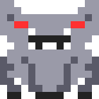
investida, leque de tiros, anel de projéteis

anel de projéteis, investida, leque de tiros

Cavernas Douradas
Esqueletos e lobos guardam o Golem.
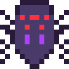
leque de tiros, invoca lacaios, anel de projéteis

pancada em área, anel de projéteis, investida

Castelo Maldito
O covil do Dragão Rubro.
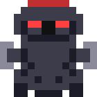
pancada em área, investida, sopro em cone

sopro em cone, chuva de meteoros, investida

Pântano Tóxico
Fantasmas e lobos servem a Rainha.
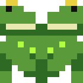
pancada em área, leque de tiros, investida

leque de tiros, invoca lacaios, espiral de tiros, investida

Deserto Ardente
O Faraó desperta das areias.
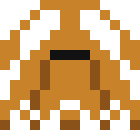
investida, pancada em área, sopro em cone

chuva de meteoros, espiral de tiros, pancada em área, sopro em cone

Abismo Final
O Rei Demónio espera no fundo.
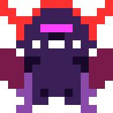
teletransporte, espiral de tiros, anel de projéteis

teletransporte, espiral de tiros, chuva de meteoros, investida, invoca lacaios, pancada em área
Inimigos
Seis monstros por mapa. Os fracos aparecem mais vezes; os fortes largam mais vezes equipamento e de nível mais alto.
Floresta Sombria
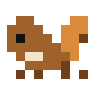
Esquilo Raivoso
muito rápido
Vida base 2 · ¢5
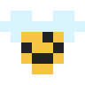
Abelha Gigante
voo errático e rápido
Vida base 2 · ¢4
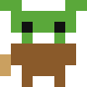
Goblin Arqueiro
mantém distância e dispara setas
Vida base 4 · ¢6
Javali
prepara-se (!) e investe em linha reta
Vida base 6 · ¢14
Bolota Explosiva
explode ao morrer, deixando uma área perigosa
Vida base 5 · ¢9
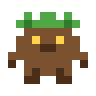
Ent Jovem
lento, muita vida e muito dano
Vida base 7 · ¢12
Cavernas Douradas
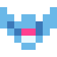
Morcego de Cristal
voo errático e rápido
Vida base 2 · ¢4
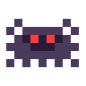
Aranha das Rochas
muito rápido
Vida base 3 · ¢5
Mineiro Esqueleto
mantém distância e dispara setas
Vida base 4 · ¢6
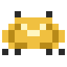
Escaravelho Dourado
prepara-se (!) e investe em linha reta
Vida base 9 · ¢14
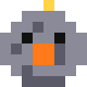
Rocha Instável
explode ao morrer, deixando uma área perigosa
Vida base 8 · ¢9
Troll das Cavernas
lento, muita vida e muito dano
Vida base 10 · ¢12
Castelo Maldito
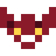
Morcego Vampiro
voo errático e rápido
Vida base 2 · ¢4
Bruxa
mantém distância e dispara orbes
Vida base 4 · ¢7
Cavaleiro Esqueleto
persegue-te
Vida base 5 · ¢4
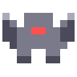
Gárgula
prepara-se (!) e investe em linha reta
Vida base 8 · ¢14
Abóbora Maldita
explode ao morrer, deixando uma área perigosa
Vida base 8 · ¢9
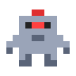
Armadura Assombrada
lento, muita vida e muito dano
Vida base 10 · ¢12
Pântano Tóxico
Sapo Venenoso
persegue-te
Vida base 4 · ¢4
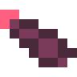
Sanguessuga
muito rápido
Vida base 3 · ¢5
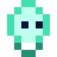
Fogo-Fátuo
mantém distância e dispara orbes
Vida base 4 · ¢7
Crocodilo
prepara-se (!) e investe em linha reta
Vida base 9 · ¢14
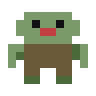
Zombi do Lodo
lento, muita vida e muito dano
Vida base 10 · ¢12
Cogumelo Tóxico
explode ao morrer, deixando uma área perigosa
Vida base 8 · ¢9
Deserto Ardente
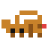
Escorpião
prepara-se (!) e investe em linha reta
Vida base 9 · ¢14
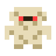
Múmia
lento, muita vida e muito dano
Vida base 10 · ¢12
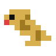
Serpente da Areia
muito rápido
Vida base 3 · ¢5
Abutre
voo errático e rápido
Vida base 2 · ¢4
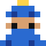
Mago do Deserto
mantém distância e dispara orbes
Vida base 4 · ¢7
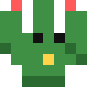
Cacto Explosivo
explode ao morrer, deixando uma área perigosa
Vida base 8 · ¢9
Abismo Final (aparecem todos os monstros do jogo)
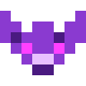
Diabrete do Vazio
voo errático e rápido
Vida base 2 · ¢4
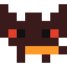
Cão Infernal
muito rápido
Vida base 3 · ¢5
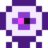
Olho do Abismo
mantém distância e dispara orbes
Vida base 4 · ¢7
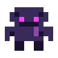
Golem Sombrio
lento, muita vida e muito dano
Vida base 10 · ¢12
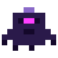
Cavaleiro do Vazio
prepara-se (!) e investe em linha reta
Vida base 9 · ¢14
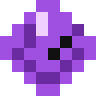
Cristal Sombrio
explode ao morrer, deixando uma área perigosa
Vida base 8 · ¢9
Skins
Skin base grátis, 1.ª extra ¢5.000, as seguintes 100, 200 e 300 diamantes ◆.
Cavaleiro
Clássico Paladino Dourado
Paladino Dourado Cavaleiro Sombrio
Cavaleiro Sombrio Lorde Carmesim
Lorde Carmesim Guardião Dourado
Guardião Dourado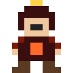
Campeão InfernoArqueiro
Clássico Caçador da Neve
Caçador da Neve Sombra
Sombra Ranger Ígneo
Ranger Ígneo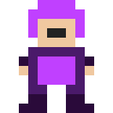
Caçador Lendário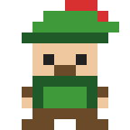
Robin HoodMago
Clássico Piromante
Piromante Criomante
Criomante Feiticeiro da Noite
Feiticeiro da Noite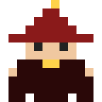
Arquimago Rubro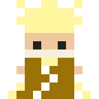
Mago RelâmpagoSem resultados.